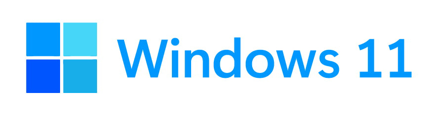
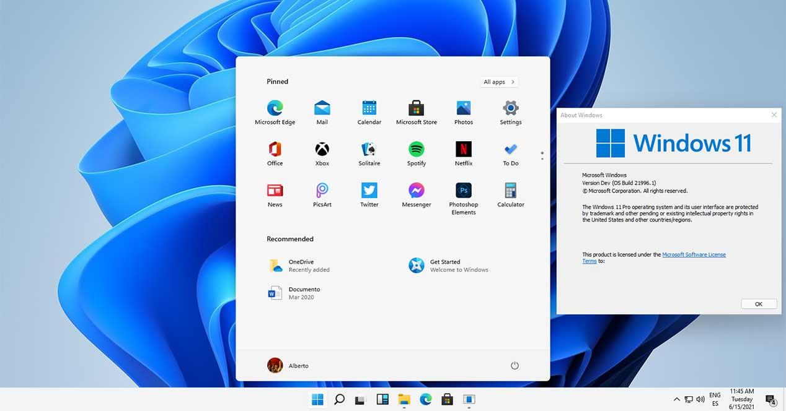

Windows es el sistema operativo insignia de Microsoft, el estándar de facto para computadoras domésticas y comerciales. Introducido en 1985, el sistema operativo basado en GUI se ha lanzado en muchas versiones desde entonces. Windows 95, de fácil uso, fue en gran parte responsable del rápido desarrollo de la informática personal.
Estrictamente hablando, Windows es, más que un sistema operativo en sí, una serie de distribuciones del MS-DOS (MicroSoft Disk Operating System) o Windows NT, antiguos sistemas operativos de la empresa, enmarcados en un entorno operativo de tipo visual, que funciona en base a la reproducción virtual de un escritorio y de otros implementos de oficina, como carpetas, archivos, e incluso una papelera de reciclaje.
La primera aparición de Windows ocurrió en 1985, como un paso adelante en la modernización del MS-DOS hacia los entornos gráficos de usuario (GUI), y desde entonces se ha convertido en el sistema operativo más utilizado del mundo, copando prácticamente la totalidad de la cuota de mercado disponible (90%) durante años.
Windows ofreció a sus usuarios una creciente variedad de versiones disponibles y actualizadas del programa, con diferencias notorias en cuanto a su aspecto, estabilidad y potencias. La incorporación de Internet permitió, además, la actualización automática del software en cualquier parte del mundo.
